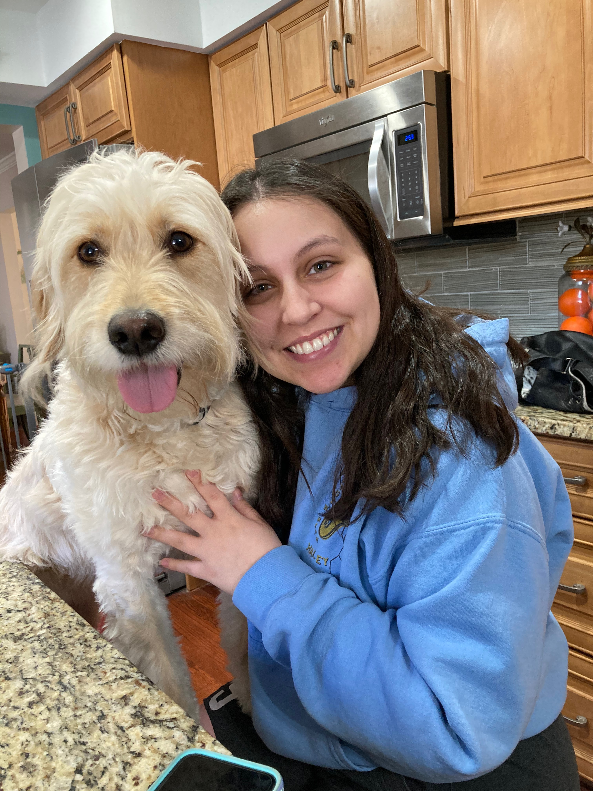

A Bit About Me
After graduating from Michigan State University with a degree in Marketing, I knew I wanted to do more. I enjoy learning so I was excited about the idea of going to graduate school. I landed on UX Design after doing a small personal project and thinking about my interests. I love to build things, whether it is a puzzle or furniture, and UX allows me to incorporate that into a career. By taking individual small pieces of a site and eventually bringing them all together to create one great piece is just like putting together a puzzle or assembling furniture. This, along with my interest of technology, persuaded me to pursue this field at The University of Michigan.
During my free time, I love to hang out with my friends, my family and play with my dog. I also love to cook and bake. It is so fun and relaxing to cook, it's my "me time". Although I haven't done much traveling, I would love to be able to travel more, especially internationally.